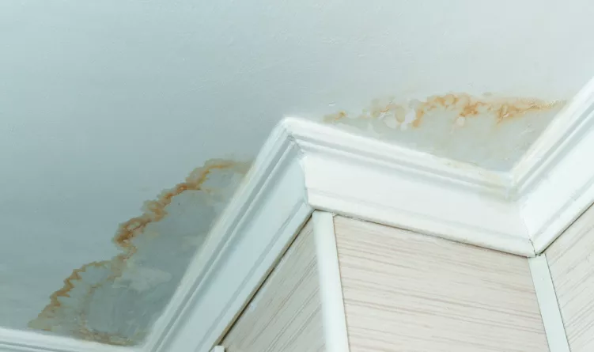

Comprehensive Roof Leak Detection & Repair
A leaking roof can quickly lead to significant damage to your home's structure, insulation, and interior finishes. At Verstera Roofing, we specialize in accurate leak detection and effective repair solutions for all types of roofing systems.
We provide both emergency temporary repairs to stop active leaks and permanent solutions that address the underlying issues, ensuring your roof's integrity for years to come.
Request Leak Inspection & Repair
Common Causes of Roof Leaks
Damaged Shingles
Missing, cracked, or curled shingles from age or storm damage create entry points for water to penetrate your roof system.
Flashing Failures
Deteriorated or improperly installed flashing around chimneys, vents, skylights, and roof valleys are common leak sources.
Clogged Gutters
Backed-up gutters cause water to pool at the roof edge, potentially forcing water under shingles and into your home.
Ice Dams
During rare Central Texas freezes, ice buildup at roof edges can force water under shingles and into your home's interior.
Improper Installation
Incorrectly installed roofing materials or poor workmanship can create vulnerabilities that lead to leaks.
Age-Related Deterioration
All roofing materials degrade over time, with older roofs becoming increasingly susceptible to leaks and failures.
Our Roof Leak Repair Services
Emergency Leak Response
Rapid response to active leaks with temporary repairs to prevent immediate water damage to your home's interior.
Advanced Leak Detection
Precise identification of leak sources using moisture meters, thermal imaging, and strategic water testing techniques.
Shingle Repair & Replacement
Expert repair or replacement of damaged shingles to restore your roof's water resistance and appearance.
Flashing Repair & Installation
Professional repair or replacement of roof flashing around chimneys, vents, skylights, and in valleys.
Gutter Maintenance & Repair
Clearing, repair, and optimization of gutter systems to ensure proper water drainage away from your roof.
Ventilation Improvements
Enhancement of attic ventilation to prevent condensation issues that can lead to moisture problems and leaks.
Leak Detection Process

Finding the exact source of a roof leak can be challenging, as water often travels from the entry point to another location before causing visible damage. Our comprehensive detection process includes:
- Visual Inspection: Thorough examination of your roof's exterior and interior for signs of water intrusion.
- Moisture Detection: Use of professional-grade moisture meters to identify areas of hidden water penetration.
- Thermal Imaging: When necessary, we employ infrared cameras to detect temperature differences that indicate moisture infiltration.
- Water Testing: Strategic application of water in suspected areas to pinpoint elusive leak sources.
- Interior Assessment: Examination of attic spaces, ceilings, and walls for additional clues about leak origination.
This methodical approach allows us to identify and address the true source of leaks, rather than merely treating the symptoms, ensuring long-lasting results.
Signs You May Have a Roof Leak
Water Stains on Ceilings
Brownish or yellowish discoloration on ceilings or walls often indicates active or recent water infiltration.
Dripping Water
Visible water droplets coming from ceiling or light fixtures during or after rain is a clear sign of a leak.
Musty Odors
Persistent musty smells in your attic or upper floors can indicate hidden moisture and potential mold growth.
Peeling Paint or Wallpaper
Bubbling or peeling paint and wallpaper suggests moisture intrusion through walls or ceilings.
Visible Mold Growth
Mold appearing on ceilings or upper walls often indicates a leak providing the moisture necessary for growth.
Damaged or Missing Shingles
Visible exterior damage to roofing materials creates vulnerability to water infiltration and leaks.
Leak Prevention & Maintenance
The best way to deal with roof leaks is to prevent them from occurring in the first place. Verstera Roofing offers comprehensive maintenance programs designed to identify and address potential leak sources before they become problems:
Seasonal Inspections
Regular professional roof inspections in spring and fall to identify and address minor issues before they cause leaks.
Gutter Cleaning
Regular cleaning and maintenance of gutters and downspouts to ensure proper water drainage away from your roof.
Preventative Repairs
Proactive replacement of aging flashing, deteriorated sealants, and damaged shingles before leaks develop.
Attic Ventilation Assessment
Evaluation and improvement of attic ventilation to prevent condensation issues that can lead to moisture problems.
What Our Customers Say About Us

Don't Let Roof Leaks Cause Costly Damage
Water damage from roof leaks can quickly escalate from a minor inconvenience to a major expense. Beyond the immediate damage to ceilings and walls, hidden moisture can lead to mold growth, structural deterioration, and damaged insulation. Contact Verstera Roofing today for prompt, effective leak detection and repair services that will protect your home and your peace of mind.
Schedule Your Leak Repair Service